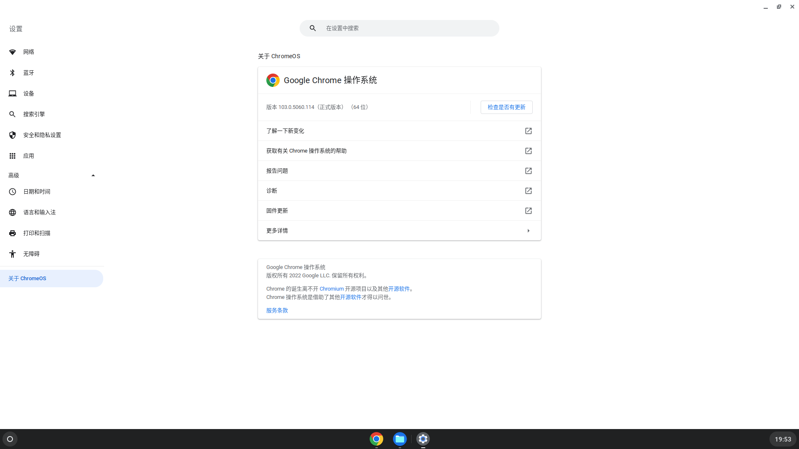

背景
这两天 ChromeOS Flex 上线了。
ChromeOS 是个啥呢？我很喜欢老人家说的，做事情、看问题要「抓住主要矛盾」，所以首先归结到这东西的属性上去，然后再看看它与其他的同类产品有什么不同的特点：ChromeOS 是 09 年的时候 Google 推出的一款基于 Linux 内核的操作系统，这就是它的属性；ChromeOS 以 Google Chrome 作主要的 UI，主打支持 Web 应用和数据上云，后来（2016 年）逐步开始兼容 Android 和 Linux，这就是它与其他同类产品比如 Windows、macOS 和 Ubuntu Desktop 等 Linux 发行版的不同之处。
以前，ChromeOS 主要是预装在 Google 定制的硬件上，一些 ChromeBook 之类的，颇有些 Apple macOS 的风范，而现在这个 ChromeOS Flex 就是官方发布的一个支持一些第三方硬件特别是古早硬件的版本，但是仅支持 x86，不支持 ARM（Raspberry Pi 哭死）。官网说明也就一些老掉牙的路数，列举一下官方适配的设备列表，然后甩个锅——其他设备可能不受支持，你自己不懂瞎折腾把机器弄坏了或者某些功能不正常别找我。
那肯定得下下来玩一下啊。系统安装上也没什么特殊的，感觉唯一一个不同就是镜像是用 Chrome 插件的形式提供的，你得在 Chromebook Recovery Utility 这个插件里选好特定选项再全自动把镜像烧录进 USB 设备——这不就是「以 Google Chrome 作主要的 UI，主打支持 Web 应用」了嘛（流汗，烧录完镜像正常进 BIOS 重新引导就好了。
昨天有个网友也是装 ChromeOS Flex，但是这东西的安装引导流程上好像没提供分区功能，默认就抹全盘，直接把那位朋友主硬盘的连分区表带数据全干掉了，他还有 Bitlocker 加密，最后数据也没恢复完整，不过还好代码之类的有备份，损失算不太严重。我有了他的前车之鉴，就慎之又慎，最后决定不装了，简单用 USB 设备体验一下就好。
以下是系统版本截图：

由于本身基于 Linux 内核，主要也就是 UI 比较新鲜，简单看了看，发现 Shell 原生支持 Linux 和 SSH，其余的各种界面就像上面一项，很浓的 Chrome 味。相比之下，我还是对它的内部更感兴趣。
关于 USB 镜像的说明
需要补充一下，因为我本身没有把 USB 设备中的镜像安装到硬盘中，所以上面的体验都是基于 USB 设备内的 Lite 系统的，该 Lite 系统是一个集成了安装正式系统的功能的裁剪版的 ChromeOS Flex，但是保留了最核心的体验部分，所以我才可以不安装就能进入它。
也正是因为这样，我并没有一个完全安装好的 ChromeOS Flex 的文件系统给我研究，我只是浅尝辄止地摆弄摆弄它的 USB 镜像，从这个 Lite 版本的安装镜像中，窥视一下它的样貌。
目录结构
在 Linux 下挂载烧录好镜像的 USB 设备，简单 STFW 后查看到如下信息：

12 个分区，不算少，不过还好后面有对应说明。
值得说明一下，ChromeOS 本身不开源，但是 Chromium OS 开源，二者差别微乎其微。如下提到的均为 Chromium OS 的文档，不过用来帮助理解 ChromeOS 应该也没什么问题。每个分区的信息如下：
| Partition | Usage | Purpose |
|---|---|---|
| 1 | user state, aka “stateful partition” | User’s browsing history, downloads, cache, etc. Encrypted per-user. |
| 2 | kernel A | Initially installed kernel. |
| 3 | rootfs A | Initially installed rootfs. |
| 4 | kernel B | Alternate kernel, for use by automatic upgrades. |
| 5 | rootfs B | Alternate rootfs, for use by automatic upgrades. |
| 6 | kernel C | Minimal-size partition for future third kernel. There are rare cases where a third partition could help us avoid recovery mode (AU in progress + random corruption on boot partition + system crash). We decided it’s not worth the space in V1, but that may change. |
| 7 | rootfs C | Minimal-size partition for future third rootfs. Same reasons as above. |
| 8 | OEM customization | Web pages, links, themes, etc. from OEM. |
| 9 | reserved | Minimal-size partition, for unknown future use. |
| 10 | reserved | Minimal-size partition, for unknown future use. |
| 11 | reserved | Minimal-size partition, for unknown future use. |
| 12 | EFI System Partition | Contains 64-bit grub2 bootloader for EFI BIOSes, and second-stage syslinux bootloader for legacy BIOSes. |
大体每个分区的作用表格里说的都很清楚了，有趣的是 A/B 分区的应用：Google 在 Android 7.0 时代正式引入了 A/B 分区模式，以优化 Android 的 OTA 体验，这里的 ChromeOS 也拥有了同样的功能，果然是母公司输出啊。当然，后来到 Android 11 时代 Google 又开始为 Android 搞 VAB 分区，那是后话了。
这里可能会有一个小问题，就是表格所述分区的逻辑顺序和磁盘里具体的物理顺序是否一致？答案是不一致，Shell 输出中的 Start-End 列很清晰地说明了这一点。我猜想，这可能是因为某些分区的大小需要适当调整（比如 user state 和 OEM，还有那三个再明显不过的 reserved），所以实际分区表中的物理顺序做了一些调整。下文的文档也印证了我的这个猜想。
其实，产品级的笔记本就是上面这个问题的最好诠释。据我了解，联想全系机器都有「一键恢复」的功能，即在系统本身出问题的情况下可以释放机器内置的出厂镜像进行系统重置，小时候觉得这个功能好神奇，其实现在看来它就是在硬盘分区上加了一个几个 G 大小的 Recovery Partition，内置出厂镜像。一般来说，这个 Recovery Partition 都会放到磁盘物理顺序的最后，基本不会放到文件分区中间，以防止对用户后期的分区操作产生影响。Dell 和惠普等厂商的机器也都有类似的功能。
引导过程
我的个人习惯：研究一个程序从哪儿开始呢？当然是业务逻辑体现得最明显同时也是程序执行入口的 main() 函数；那研究一个 OS 呢？自然就是引导。细节先放一放，先把它跑起来再说（
我们从 EFI 分区开始。官方文档中的对应部分详细描述了 ChromeOS 的启动引导，接下来我们根据文件目录树来描述一下这个过程。首先用 mount 命令挂载一下 EFI 分区，过程很简单按下不提，直接看文件目录树：
wolfyzhang@Legion-Y7000P:~/ChromeOS$ tree
.
├── efi
│ └── boot
│ ├── bootia32.efi
│ ├── bootx64.efi
│ ├── grub.cfg
│ ├── grubia32.efi
│ └── grubx64.efi
├── syslinux
│ ├── default.cfg
│ ├── ldlinux.c32
│ ├── ldlinux.sys
│ ├── README
│ ├── root.A.cfg
│ ├── root.B.cfg
│ ├── syslinux.cfg
│ ├── usb.A.cfg
│ ├── vmlinuz.A
│ └── vmlinuz.B
└── System Volume Information
├── IndexerVolumeGuid
└── WPSettings.dat
4 directories, 17 files文档上有说，ChromeOS 引导上除了 x86 legacy BIOS 和 x86 EFI BIOS 以外还支持几乎已经形成事实标准的嵌入式平台的 U-Boot。
x86 EFI BIOS
先说现在我机器用的 x86 EFI BIOS。
由于我手头的目录结构是安装镜像，所以干脆从第一次 USB 引导安装系统开始说起吧，后面再补充系统安装完成之后的引导流程。
USB 设备上 Lite 系统安装正式操作系统的流程如下：
-
系统上电，加载 UEFI ；
-
UEFI 寻找启动分区，即 EFI 分区，之后加载其中的
\efi\boot\bootx64.efi引导程序；启动分区有三个要求：GUID 的类型描述为「EFI System Partition」，32 位 Unicode ID 为「28732ac1-1ff8-d211-ba4b-00a0c93ec93bn」；文件系统为 FAT；内含
\efi\boot\bootx64.efi文件 -
bootx64.efi引导程序获取控制权，显示启动界面（如果有需要选择启动项等）； -
等待用户配置特殊的启动项或者自动加载，加载一个基本内核；
-
基本内核再加载最常规的基本驱动：鼠标、键盘、磁盘驱动等；
直至这一步，我们其实只是手动选择了一下引导设备，其余工作都是计算机自动完成。在我们看来，就是选完引导设备后就可以等着用鼠标键盘在 Lite 系统里进行后续操作了
-
等待用户配置安装参数；
-
开始按照用户配置复制文件（正式安装，即读条）；
-
开始检测硬件配置并配置各种驱动参数（否则正式系统开机后部分硬件无法正常工作）；
-
在硬盘上创建或重写 EFI 分区，将能引导操作系统的引导程序（
bootx64.efi）写入；ChromiumOS 安装过程中会创建一个 EFI 系统分区（分区 12）并安装一个 64 位版本的 grub2 作为未来后续启动的bootloader(
/efi/boot/bootx64.efi)，同时分区内包括其配置文件(/efi/boot/grub.cfg)。要更改引导分区，只需要编辑grub.cfg文件就好
之后重启系统，硬件就能根据硬盘上的引导分区一步一步的加载已经配置好的操作系统了。
ChromeOS 归根结底还是属于 Linux 的发行版，何况开发团队还「want to make as few modifications to the upstream kernel as possible」，所以引导过程整体梳理下来感觉也不会有什么特殊之处（流汗，当然这也都是我意淫的，我没看 log，没有证据。
下面再说说正式安装的系统的引导过程：
- 系统上电，加载 UEFI ；
- UEFI 寻找启动分区，即 EFI 分区，之后加载其中的
\efi\boot\bootx64.efi引导程序； bootx64.efi引导程序获取控制权，加载系统内核；- 启动程序显示启动界面（如果有需要选择启动项等），等待用户配置特殊的启动项或者自动加载；
- 启动程序正式加载内核，之后交换控制权给操作系统内核；
- 内核（或者其它总线驱动）处理硬件配置，加载并配置剩余驱动代码，启动用户界面（Shell 或 GUI 等）；
就这样，正式安装的系统也成功引导了。
x86 legacy BIOS
传统的 BIOS 引导和 UEFI 整体大差不差，区别主要在于引导扇区的处理上。
说句题外话，我们先看下 51 单片机的启动流程：
对于 51 来讲，可寻址的程序存储器（片内 ROM 和片外 ROM）总空间一共为 64KB，统一编址，地址范围为
0000H-0FFFFH，其中片内 ROM 地址为0000H-01FFFH，片外 ROM 地址为02000H-FFFFH。当 EA 脚为高电平时，程序从片内 ROM 开始执行，直至 PC 值超过01FFFH时将自动转向外部 ROM 空间。当 EA 脚为低电平时，程序从外部 ROM 开始执行。对于内部无 ROM 的 8031 单片机，EA 脚则必须接地，保持低电平，强制 CPU 从外部 ROM 读取程序，即程序存储器必须外接。通常情况下 ROM
0000H-0002H处存放了一个跳转指令，跳转到0033H地址之外，而主程序代码从0033H单元开始存放。至于
0003H-0032H这 48 个单元，则专门用于存放中断处理程序。
51 单片机一般没有操作系统的概念（有也是作为主程序写在 0033H 后），而 ROM 中 0000H-0002H 的空间不足以放置主程序代码，所以 51 采用了 ROM 首个分区「跳转」的办法来处理这个问题。
传统 BIOS 囿于 MBR 分区格式的种种限制，也是采用了类似的方式来引导操作系统的。
太晚了，明天再继续补充完整 MBR 和 GPT 的区别，以及传统 BIOS 的引导过程